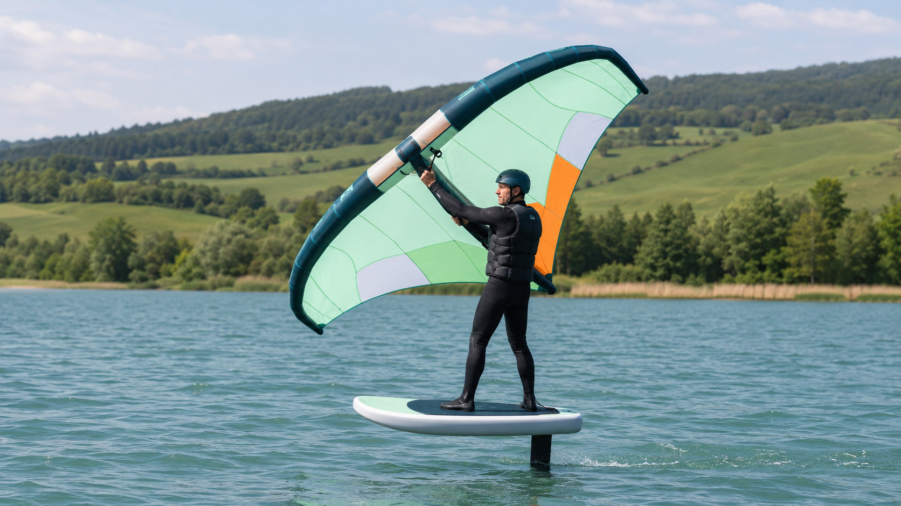

FAQ / Dudas
Preguntas Frecuentes
¿Tienes dudas sobre cómo empezar en el Wingfoil? Aquí damos respuesta a las preguntas más habituales sobre seguridad, edad, viento y requisitos mínimos.
Con el material adecuado, el Wingfoil es un deporte que no tiene edad. Se puede aprender desde los 12 años aproximadamente y, por arriba, ¡lo que tu cuerpo aguante! De hecho, el Wingfoil está siendo el deporte náutico al que están regresando deportistas que por edad, abandonaron el Windsurf o el Kitesurf. No tiene edad, ¡también para cuando nos jubilemos con 64 años! Te sorprenderías de la cantidad de personas de más de 65 años que han encontrado en el Wingfoil ese deporte que siempre soñaron y que aún pueden practicar.
El tiempo que falte para su finalización bien se recupera otro día, bien se devuelve la parte proporcional del tiempo no consumido.
Es un deporte de agua, es básico saber nadar, aunque lleves un chaleco de flotación y neopreno que también ayudan a flotar más. No hace falta que seas capaz de batir a Michael Phelps. La escuela dispone de chalecos para todos los alumnos.
Como casi todos los deportes, tiene sus riesgos, pero la prudencia y el conocimiento los minimizan. A pesar de que pueda parecer una actividad peligrosa, con la técnica que se enseña en los cursos y aprendiendo en un pantano de agua plana, el wingfoil resulta fácil, divertido y seguro.
No hay una fórmula concreta, pero en un curso de entre 4 y 6 horas debería alcanzarse una base suficiente para que el alumno pueda seguir practicando por sí mismo y continuar evolucionando de forma independiente. Cada alumno es diferente: la edad, la experiencia en deportes de viento, la habilidad... todo influye. Por eso damos los cursos con total adaptabilidad a las condiciones de cada alumno.
¡Todo el mundo puede hacer Wingfoil! Por eso es el deporte náutico que más está explotando en todo el mundo. Cada vez más niños y mayores lo practican porque, aunque parece un deporte de fuerza, con la técnica y enseñanza adecuada no requiere de esa fuerza aparente, ni es agresivo con el cuerpo.
¿Aún tienes dudas?
Si tienes alguna pregunta específica sobre las fechas de los cursos, alojamiento cercano en Álava o vientos del embalse, escríbenos directamente y te asesoraremos.
Enviar un Mensaje